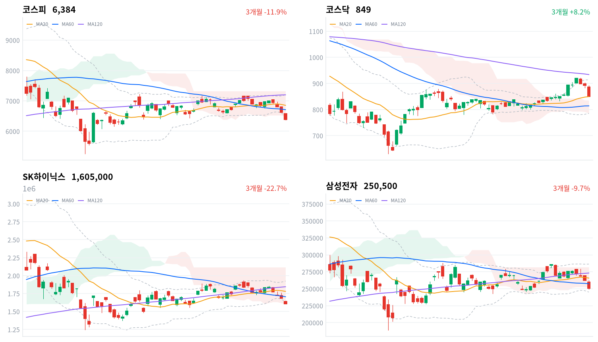

한글날 휴장 사이 미국에서 쌓인 메모리 약세가 한 번에 넘어와 코스피는 하루 저가 근처인 6,384에서 끝났다. 같은 정보를 처음 받은 대만가권은 거의 움직이지 않았고, 메모리 비중이 낮은 코스닥은 코스피보다 더 밀렸다.
우리는 메모리 대형주의 하락을 미국 이틀치의 전이로, 코스닥과 업종 전반의 하락을 한국 고유의 위험 회피로 본다. 미국 메모리가 반등하는 10월 13~15일 세션에 코스피가 아시아를 따라 오르는지가 이 판단을 가른다.
한글날 휴장 뒤 첫 세션에서 코스피는 3.65% 내린 6,384로 마감했고, 코스닥은 4.83% 내렸다. 휴장 사이 미국 두 세션에서 마이크론은 10월 8일 4.79%, 9일 0.66% 내렸는데 국내 언론은 그 배경으로 오픈AI의 연환산 매출이 9월에 알려진 수치보다 200억달러 적다는 파이낸셜타임스 보도를 들었다. 삼성전자(-4.39%)와 SK하이닉스(-4.52%)는 미국 메모리의 이틀치와 비슷한 폭으로 내렸다. 외국인은 코스피에서 1조9,898억원을 순매도했다(전일 2조704억원 순매도, 당일 잠정). 같은 날 처음 열린 대만가권은 거의 움직이지 않았다.
오늘은 채권 금리 자료가 들어오지 않아, 시장이 무엇을 값매겼는지는 주식 수급과 거래로만 본다. 외국인은 휴장 전후 네 세션 동안 8조4,365억원을 순매도했고, 거래는 SK하이닉스(4.88조원)와 삼성전자(4.42조원)에 몰렸다. 언론은 이 매도를 AI 성장성 우려 하나로 설명하지만, 그것은 보도의 서사이지 가격에서 잰 기대가 아니다. 우리가 다르게 보는 곳은 하락의 넓이다. 미국 메모리에서 온 충격이라면 메모리 비중이 높은 코스피가 가장 아파야 하는데, 오늘은 코스닥이 더 내렸고 WICS 섹터가 하나도 빠짐없이 내렸다.
메모리 대형주의 하락은 미국 메모리 전이로 대부분 설명되고, 코스닥과 업종 전반의 하락에는 한국 고유의 위험 회피가 얹혔다고 판단한다. 코스닥에서 외국인은 179억원만 팔았는데 지수는 코스피보다 더 내렸고, 기관이 2,212억원을 순매도했다(당일 잠정). 한국일보는 단일종목 레버리지 ETF가 나온 뒤 급등락이 이어지며 유동성이 말랐고 투자자 예탁금이 16.6% 줄었다고 보도했다. 코스닥 급락이 2차전지·로봇 같은 고변동 종목의 위험회피 베타였을 수도 있으나, 그렇다면 미국 메모리가 반등할 때 한국도 아시아 평균 이상으로 되돌아야 한다. 두 설명은 10월 13~15일 가운데 직전 미국장에서 마이크론이 1% 넘게 오른 세션에서 갈린다. 그날 코스피가 아시아 네 지수 평균을 1%포인트 넘게 밑돌고 외국인 순매도가 1조원을 넘으면 우리 해석이 맞다.
오늘 등락 가운데 메모리 대형주의 낙폭에는 무게를 덜 두고, 코스닥과 업종 전반의 낙폭에 무게를 둔다. 앞의 것은 미국 이틀치를 하루에 받은 것이고, 뒤의 것은 아직 다 설명되지 않은 한국 고유의 매도다. 새로 제안할 상품은 없다. 해외주식 펀드가 보는 반도체 테마에서는 미국 메모리 하락으로 가격 근거가 약해졌고, 한국 시장에 따로 할인이 붙는지는 미국 메모리가 반등하는 날에야 드러난다. 한국 시장의 할인 여부는 10월 13~15일 세션에서 확인한다. 10월 14일 밤 9시 30분(한국시간)에 나오는 미국 9월 소비자물가가 15일 세션에 겹친다. 회사 쪽 답은 언론이 전한 10월 27일 SK하이닉스 3분기 실적과 주주환원 발표에서 나온다.
코스피가 볼린저 밴드 하단(6,502) 위로 돌아와 마감하면 한국 고유의 위험 회피라는 해석을 거둔다. 오늘 종가는 이 밴드 하단과 일목 구름 하단을 모두 밑돈다. 미국 메모리 반등 하나로 지수가 밴드 안으로 돌아온다면 오늘 하락은 미국 전이와 지수 구성으로 충분히 설명되고, 따로 얹힌 국내 요인은 없었다고 본다.
10월 8일 판단은 무효화됐으며 코스피 종가 6,384가 그날 정한 반증 선인 20일 저점 6,582를 밑돌았다. 잘못 본 것은 옵션 만기와 ETF 리밸런싱이 지나가면 외국인 매도가 줄 것이라는 전제다. 기다린 10월 12일 세션에서 외국인은 다시 대규모로 순매도했고, 삼성전자와 SK하이닉스는 모두 코스피보다 더 내려 그날 대안으로 적은 「보유를 줄이는 흐름」의 조건이 채워졌다. 그러나 오픈AI 보도와 미국 메모리 하락이라는 새 재료가 겹쳐, 오늘 매도가 보유 조정인지 미국발 충격인지는 하루로 가르지 못한다. 하루짜리 수급 사건이라는 해석은 버리고, 미국 메모리 전이와 한국 고유의 위험 회피라는 두 갈래로 다시 쓴다. 기다린 것 가운데 삼성전자 콘퍼런스콜은 아직이고, 중국의 석유제품 수출 재개는 로이터의 소식통 보도만 있을 뿐 정부 발표는 없다.
직전 미국 세션은 코스피에 하락 재료를 주지 않았는데 10월 9일(현지) 미국 3대 지수는 모두 올랐다(S&P500 +0.59%, 나스닥 +0.64%, 다우 +0.83%). 코스피를 누른 것은 그 하루가 아니라 휴장 사이 이틀 동안 메모리 반도체에 쌓인 약세다. 오늘 아시아는 거의 움직이지 않았다(항셍 +0.25%, 상해종합 -0.43%, 대만가권 -0.02%). 일본은 휴장이라 닛케이는 10월 9일 값(-0.02%)이다. 네 지수는 평균 0.06% 내렸고, 코스피는 이보다 3.59%포인트 더 내렸다. 메모리 비중이 낮은 대만이 같은 정보를 처음 받고도 버틴 날, 한국만 크게 밀렸다.
시가는 전일 종가(6,626)보다 낮은 6,578이었고, 이 시가 근처의 6,590이 하루 고가였다. 연휴 동안 쌓인 매도 주문이 시가에 먼저 나온 뒤에도 지수는 한 번도 위로 달아나지 못했다. 한국 정규장 동안 미국 선물은 거의 움직이지 않았다(S&P 선물 -0.01%, 나스닥 선물 -0.23%). 장중 하락을 키운 것은 밖의 가격이 아니라 국내 매도였다.
코스피는 6,368과 6,590 사이 하루 범위의 바닥 근처에서 마감했고, 코스닥은 하루 저가(849.07)와 거의 같은 849.19에서 끝났다. 두 시장 모두 장 막판까지 밀려, 마감 전에 저가를 사들이는 매수는 보이지 않았다. 원/달러는 한국장 시간대에 1,342원(09:00)에서 1,331원(15:30)까지 내려 1,333원에서 마지막으로 관측됐다. 외국인이 주식을 2조원 가까이 판 날에 원화는 오히려 강해졌다. 머니투데이는 주간 거래 종가가 2024년 10월 이후 가장 낮았다고 전했고, 뉴스핌은 반도체 기업 중심의 달러 매도 물량을 원인으로 들었다.
미국 메모리 약세가 한국 메모리 대형주를 끌어내리고, 외국인 매도가 그 하락을 지수 전체로 넓힌 날이다. 뉴스1은 외국인이 삼성전자와 SK하이닉스 두 종목을 합쳐 약 1조5,762억원을 순매도했다고 집계했다. 같은 매체에 따르면 대신증권은 삼성전자 실적 발표 뒤의 차익실현과 오픈AI 보도로 위축된 AI 투자심리를 주된 요인으로 꼽았다. 반도체 밖에서도 대형주가 크게 내렸다(두산에너빌리티 -8.33%, LG화학 -9.08%, LG전자 -7.88%). 오른 쪽은 해운과 일부 금융, 공개매수 종목처럼 재료가 따로 있는 곳에 그쳤다. 시간외 거래는 자료가 없어 마감 뒤에도 매도가 이어졌는지는 가리지 못한다.
코스피는 휴장 전 사흘에 이어 네 세션 연속 내리며 볼린저 밴드 하단(6,502)과 일목 구름 하단(6,469)을 모두 밑돌았다. 종가는 20일선(6,854)보다 6.85% 아래이고, 오늘 저가가 곧 20일 저점이 됐다. 한국일보는 코스피가 하반기 들어 23.11% 내렸다고 집계했다. 코스닥은 더 크게 내렸지만 20일선(849)과 거의 같은 자리에서 끝났고 일목 구름 위에 남았다. 추세의 자리로 보면 코스닥이 여전히 코스피보다 높고, 오늘의 낙폭은 코스닥이 더 컸다.
| 지수 | 종가 | 등락률 | 시가 | 고가 | 저가 | 전일 종가 |
|---|---|---|---|---|---|---|
| 코스피 | 6,384.24 | -3.65% | 6,578.17 | 6,589.69 | 6,368.49 | 6,625.93 |
| 코스닥 | 849.19 | -4.83% | 885.53 | 891.79 | 849.07 | 892.27 |
장중에는 시가가 사실상 고가였고, 지수는 오전에 6,500선을 내줬다. 오전 11시에 볼린저 밴드 하단 위(6,513)로 한 번 올라섰지만 지키지 못했고, 오후 2시 6,456까지의 반등도 마지막 한 시간 반 동안 무너졌다. 반등이 밴드 하단에서 두 번 막힌 것은 저가 매수가 약했다는 뜻이다. 하락은 반도체 밖 대형주에도 넓었다(HD현대중공업 -4.82%, 한화오션 -6.53%, 포스코퓨처엠 -8.34%). 오른 대형주는 해운과 일부 금융에 그쳤다(HMM +4.81%, 신한지주 +1.01%, 삼성화재 +1.63%). 한화머시너리앤서비스홀딩스는 공개매수 첫날 24.01% 올랐다.
코스닥은 885에서 출발해 하루 내내 내려 저가에서 끝났다. 오전 10시 반에 870선이 무너진 뒤 반등다운 반등이 없었다. 센머니는 미국 반도체 약세와 중동 정세 불안을 원인으로 들었다. 코스닥 하락에는 외국인 매도가 거의 없었고, 기관과 개인의 손바뀜 속에 가격만 밀렸다.

코스피·코스닥·SK하이닉스·삼성전자 3개월 일봉에 이동평균(20·60·120)·볼린저밴드·일목균형표 구름대를 겹쳐 그렸다. 상승 캔들은 녹색, 하락 캔들은 적색이다.
코스피는 세 이동평균과 일목 구름 아래, 볼린저 밴드 하단 밖에서 마감했다. 밴드 하단(6,502)을 되찾으면 60일선(6,710)이 다음 저항이고, 20일 저점(6,368)을 내주면 종가 10% 안에는 계산된 지지선이 없다.
코스닥은 20일선과 사실상 같은 자리, 일목 구름 위에서 마감해 추세의 자리가 코스피보다 높다. 기준선(852)을 되찾으면 전환선(878)이 다음 저항이고, 구름 상단(835)을 내주면 60일선(814)이 다음 지지선이다.
SK하이닉스는 세 이동평균 아래, 일목 구름 하단 바로 위에서 볼린저 밴드 하단 밖으로 마감했다. 밴드 하단(164만원)을 되찾으면 60일선(171만원)이 다음 저항이고, 구름 하단(160만원)을 내주면 구름 아래로 내려간다.
삼성전자는 세 이동평균과 일목 구름 아래에서 마감했다. 구름 하단(25만2천원)을 되찾으면 60일선(25만7천원)이 다음 저항이고, 20일 저점(24만6천원)을 내주면 볼린저 밴드 하단(24만5천원)이 다음 지지선이다.
위 레벨은 이동평균·볼린저밴드·일목균형표와 스윙 고저를 기계적으로 계산한 값이며 투자 권유가 아니다.
| 주체 | 순매수(억원) |
|---|---|
| 개인 | +14,614 |
| 외국인 | -19,898 |
| 기관 | -1,292 |
| 주체 | 순매수(억원) |
|---|---|
| 개인 | +2,383 |
| 외국인 | -179 |
| 기관 | -2,212 |
코스피 하락은 외국인이 혼자 만들었다. 외국인은 9월 23일부터 열 거래일 연속 순매도했고, 오늘 규모는 전일과 비슷했다(전일 2조704억원 순매도, 당일 잠정). 전일 값은 10월 8일에 집계한 잠정치 2조518억원에서 갱신된 수치다. 기관 순매도는 1,292억원으로 크게 줄었고(전일 1조6,789억원 순매도), 개인은 1조4,614억원을 순매수해 전일(2조9,972억원)의 절반쯤만 받았다. 휴장 전 만기·리밸런싱이 겹친 날과 달리 오늘은 기관이 거의 빠진 채 외국인 매도가 지수를 눌렀다.
매도는 종목으로 보면 더 좁았다. 뉴스1은 외국인 매도가 삼성전자와 SK하이닉스에 몰렸고, 기관도 삼성전자를 4,272억원 팔았다고 전했다. 같은 매체는 외국인이 10월 들어 SK하이닉스(5조2,954억원)와 삼성전자(1조7,986억원)에 매도를 집중했다고 집계했다. 실적 확인 뒤에도 매도가 같은 두 종목에 이어졌다는 점이 10월 8일의 하루짜리 수급 사건 해석을 무너뜨렸다.
코스닥에서는 외국인이 179억원 순매도로 거의 균형이었고(전일 625억원 순매수), 기관이 2,212억원을 순매도했다(전일 1,075억원 순매도). 개인은 2,383억원을 순매수했다(전일 483억원 순매수). 외국인이 빠지지 않은 시장에서 지수가 급락한 것은, 코스닥 하락이 해외 자금 이탈보다 국내 투자자의 위험 회피에서 나왔다는 해석과 맞는다.
장중 누적 수급과 프로그램 매매는 받을 수 있는 자료가 없어 싣지 않는다.
| 순위 | 종목/ETF | 구분 | 거래대금 | 비고 |
|---|---|---|---|---|
| 1 | SK하이닉스 | 개별주 | 4.88조원 | - |
| 2 | 삼성전자 | 개별주 | 4.42조원 | - |
| 3 | 반도체 테마 ETF | 테마·롱 | 2.20조원 | 28종 합산 |
| 4 | KODEX CD금리액티브(합성) | 단기금리·현금성 | 1.21조원 | - |
| 5 | 삼성전기 | 개별주 | 0.91조원 | - |
| 6 | SK스퀘어 | 개별주 | 0.86조원 | - |
| 7 | 삼성전자우 | 개별주 | 0.68조원 | - |
| 8 | 2차전지 테마 ETF | 테마·롱 | 0.42조원 | 14종 합산 |
| 9 | 삼성SDI | 개별주 | 0.32조원 | - |
| 10 | LG이노텍 | 개별주 | 0.26조원 | - |
단위 백만원 원본을 조 단위로 환산했다. 같은 기초자산 ETF는 방향별로, 같은 테마 섹터 ETF는 테마별로 묶고 지수·해외 ETF는 제외했다.
거래는 내린 메모리 대형주와 그 상품에 몰렸으며 SK하이닉스가 삼성전자를 제치고 1위였고, 반도체 테마 ETF 28종 합산이 3위다. 거래대금은 매수와 매도를 함께 세므로, 이 쏠림은 메모리 대형주와 반도체 상품에서 손바뀜이 컸다는 뜻이지 자금이 어느 쪽으로 움직였는지를 말하지 않는다. 반도체 ETF 묶음에는 레버리지 상품이 섞여 있고, 상위 열 줄에 인버스 상품은 없다. 지주사 SK스퀘어(-6.29%)가 6위로 올라와 SK하이닉스보다 더 크게 내린 점도 눈에 띈다.
나머지 자리는 하락폭이 큰 부품주와 현금성 상품이 채웠다. LG이노텍은 16.17% 급락하며 10위에 들었고, 삼성전기는 3.82% 내렸다. KODEX CD금리액티브(합성)는 단기금리를 따르는 대기 자금 상품이라 방향성 거래와 결이 다르다. 2차전지 테마 ETF 14종 합산은 8위였고 삼성SDI는 1.41% 내려 지수보다 덜 밀렸다.
섹터 막대는 하락이 반도체 하나가 아니었음을 보여 주는데 WICS 12개 섹터가 모두 내렸고, 가장 크게 내린 쪽은 로봇(-6.79%)·반도체(-5.02%)·조선(-5.00%)이다. 가장 덜 내린 은행도 0.49% 내렸다. 한 주로 보면 2차전지(+3.31%)만 올랐고, 반도체의 한 달 수익률(+5.83%)은 여전히 섹터 가운데 1위지만 폭이 크게 줄었다.
네이버 업종 등락률 상위 60개 가운데 오른 업종은 열 개였고, 그중 폭이 넓은 쪽은 해운사(+5.57%, 11종목 중 6종목)와 손해보험(+1.07%, 12종목 중 8종목)이다. 은행은 보합이었지만 11종목 가운데 3종목만 올랐다. 내린 쪽은 넓었다. 우주항공과국방은 35종목 가운데 2종목, 증권은 39종목 가운데 2종목, 전기제품은 68종목 가운데 9종목만 올랐다. 반도체와반도체장비는 이 60개 목록에 들지 못할 만큼 내려, 업종 안에서 몇 종목이 올랐는지 볼 수 없다.
메모리 대형주와 반도체 장비주가 지수를 가장 크게 끌어내렸다(삼성전자 -4.39%, SK하이닉스 -4.52%, SK스퀘어 -6.29%, 한미반도체 -6.93%, DB하이텍 -5.12%). 머니투데이는 연휴 동안 뉴욕증시에서 번진 AI 산업 성장성 우려가 국내 반도체주 하락으로 이어졌다고 썼다. 아이뉴스24는 오픈AI 매출 논란과 반도체 슈퍼사이클 불확실성을 장 초반 약세 요인으로 꼽았다. SK스퀘어가 SK하이닉스보다 더 내린 데 손자회사 솔리다임의 미국 상장설이 겹쳤다는 해석은 가능하지만, 오늘 보도로 그 연결을 확인하지는 못했다. 한미반도체와 DB하이텍에는 확인된 개별 재료가 없다.
해운주는 지수와 반대로 올랐다(HMM +4.81%, 팬오션 +6.97%). 한국경제에 따르면 미국과 이란의 호르무즈 해협 재개방 협상이 교착에 빠졌고, 11일 해협에서 유조선이 미확인 발사체에 맞았다는 보도가 나오며 운임 상승 기대가 커졌다. 비즈니스포스트가 인용한 하나증권 자료로는 초대형 유조선 운임이 일주일 새 21.6% 올랐다. 다만 이 운임은 유조선 운임이고 HMM은 컨테이너선사라, 같은 재료가 HMM에 닿는 경로는 기사에 설명이 없다.
기아는 1.22% 올라 자동차 대형주 가운데 홀로 강했다. 재경일보는 최근 7일간 확인된 개별 공시나 뉴스 등 뚜렷한 상승 재료는 없었다고 보도했다. 확인된 재료 없음.
전자부품주가 급락했다(LG이노텍 -16.17%, 대덕전자 -6.85%). 이투데이는 원·달러 환율 하락으로 LG이노텍의 3분기 영업이익이 부진할 것이라는 전망을 전했고, 에프앤가이드 컨센서스가 한 달 새 32.8% 내려갔다고 썼다. 같은 매체에 따르면 유안타증권은 목표가를 120만원으로 낮췄는데 여기에 애플이 아이폰18 프로 부품 10월 주문을 최소 15% 줄여 달라고 요청했다는 닛케이 아시아 보도(10월 9일)가 겹쳤다. 대덕전자에는 확인된 재료가 없다.
전력기기주도 크게 내렸다(효성중공업 -10.1%, LS ELECTRIC -6.09%, 대한전선 -8.54%). 재경일보와 CBC뉴스는 개별 악재 공시 없이 단기 급등 뒤 차익실현과 밸류에이션 부담을 원인으로 들었다. CBC뉴스에 따르면 대신증권은 LS ELECTRIC 목표가를 30만원으로 낮췄다. 대신증권은 원화 강세로 HD현대일렉트릭의 3분기 원화 환산 이익이 기대를 밑돌았을 것이라며 목표가를 내리기도 했다. 원화 강세가 수출 부품주와 전력기기주의 이익 전망을 함께 깎은 날이다. 대한전선에는 확인된 개별 재료가 없다.
거래대금 상위 종목 가운데 금호전기(+29.93%)와 금호건설(+20.29%)은 급등했지만 확인된 재료는 없다. 두산(-9.02%)과 두산에너빌리티도 크게 내렸다.
외국인이 주식을 2조원 가까이 판 날에도 원화는 강해졌다. 원/달러는 한국장 시간대에 개장 무렵 고점(1,342원)에서 마감 무렵 저점(1,331원)까지 하루 내내 내렸다. 보통은 외국인 주식 매도가 달러 수요로 이어지는데 오늘은 반대였다. 주식 매도 대금이 곧바로 달러로 바뀌지 않았거나, 수출기업의 달러 매도가 그보다 컸다는 뜻이다. 뉴스핌의 설명은 뒤쪽이다. 이 원화 강세는 수출주의 원화 환산 이익을 깎는 쪽으로 작용했고, 오늘 LG이노텍과 전력기기주의 목표가 하향 사유로 직접 거론됐다.
국고채·회사채·CD 금리와 기준금리는 오늘 한국은행 자료가 들어오지 않아 표를 싣지 않는다. 그래서 주식 급락에 채권이 안전자산 수요로 반응했는지, 신용 금리차가 넓어졌는지는 오늘 확인하지 못한다. 미국 쪽 금리 기대는 높은 채로인데 머니투데이에 따르면 월스트리트저널이 조사한 경제전문가들은 미국 10년물 금리를 올해 말 5.1%로 내다봤다. 국내 통화정책의 다음 분기점은 10월 22일 한국은행 금융통화위원회다.
| 미국 참조 지수 | 구분 | 관측 | 등락률 | 업종 내 상승 비율 | 기준일 |
|---|---|---|---|---|---|
| 반도체·AI 하드웨어 | 종목 | SK하이닉스 | -4.52% | – | 10/12 |
| 반도체·AI 하드웨어 | 종목 | 삼성전자 | -4.39% | – | 10/12 |
| 반도체·AI 하드웨어 | 지수 | 대만가권 | -0.02% | – | 10/12 |
| 전력망 | 업종 | 전기제품 | -3.51% | 13% | 10/12 |
| 전력망 | 종목 | HD현대일렉트릭 | -3.96% | – | 10/12 |
| 전력망 | 종목 | LS ELECTRIC | -6.09% | – | 10/12 |
| 전력망 | 종목 | 효성중공업 | -10.10% | – | 10/12 |
| 방산 | 업종 | 우주항공과국방 | -4.23% | 6% | 10/12 |
| 방산 | 종목 | 한화에어로스페이스 | -3.25% | – | 10/12 |
| 방산 | 종목 | LIG디펜스앤에어로스페이스 | -3.41% | – | 10/12 |
| 산업재 | 종목 | HD현대중공업 | -4.82% | – | 10/12 |
| 산업재 | 종목 | 한화오션 | -6.53% | – | 10/12 |
| 산업재 | 종목 | 삼성중공업 | -4.51% | – | 10/12 |
| 금속·광업 | 업종 | 철강 | -2.82% | 14% | 10/12 |
| 금속·광업 | 업종 | 비철금속 | -2.61% | 28% | 10/12 |
| 금속·광업 | 종목 | POSCO홀딩스 | -2.45% | – | 10/12 |
| 금융 | 업종 | 은행 | +0.02% | 27% | 10/12 |
| 금융 | 업종 | 증권 | -2.07% | 5% | 10/12 |
| 금융 | 종목 | KB금융 | 0.00% | – | 10/12 |
| 금융 | 종목 | 신한지주 | +1.01% | – | 10/12 |
| 소프트웨어 | 업종 | 소프트웨어 | -1.78% | 20% | 10/12 |
| 소프트웨어 | 업종 | IT서비스 | -2.82% | 12% | 10/12 |
| 소프트웨어 | 종목 | NAVER | -1.80% | – | 10/12 |
| 에너지 | 종목 | SK이노베이션 | -5.03% | – | 10/12 |
| 일본 | 지수 | 닛케이 | -0.02% | – | 10/9 |
| 중국 | 지수 | 항셍 | +0.25% | – | 10/12 |
| 중국 | 지수 | 상해종합 | -0.43% | – | 10/12 |
해외주식 펀드의 원화 환산 조건은 외국인 대규모 매도에도 원화 강세 쪽으로 움직였다. 한국장 시간대 원/달러는 1,342원(09:00)에서 1,331원(15:30)까지 내려 1,333원에서 마지막으로 관측됐는데 서울 외환시장 공식 종가가 아닌 장중 관측값이다. 같은 원화로 더 많은 달러를 바꿀 수 있는 쪽이지만, 이미 들고 있는 달러 자산의 원화 환산 가치는 그만큼 줄어든다. 대기 자금의 참고 금리인 CD 91일·국고채 3년·기준금리는 오늘 들어오지 않아 비교하지 못한다. 한국장 시간대 미국 선물은 ES -0.01%, NQ -0.23%로 거의 움직이지 않았다.
반도체·AI 하드웨어는 한국과 대만이 정반대였다. SK하이닉스와 삼성전자는 크게 내렸지만 같은 시간 대만가권은 -0.02%로 거의 움직이지 않아, 미국 메모리 약세가 메모리 비중이 큰 한국에만 크게 실렸다. 전력망은 폭넓게 약했다. 전기제품 업종은 -3.51%에 오른 종목 비율이 13%였고, 전력기기 대형주는 더 크게 내렸다(HD현대일렉트릭 -3.96%, LS ELECTRIC -6.09%, 효성중공업 -10.10%). 방산도 우주항공과국방 업종이 -4.23%에 오른 종목 비율 6%로 거의 전 종목이 밀렸다(한화에어로스페이스 -3.25%, LIG디펜스앤에어로스페이스 -3.41%). 전력망과 방산의 하락에는 원화 강세와 국내 위험 회피가 섞여 있어, 미국장 같은 테마의 가격과 곧바로 잇기 어렵다. 이 관측은 직전 미국 세션과 공통 뉴스에 대한 반응일 수 있고, 미국장을 앞서 움직인다는 근거는 아직 없다.
머니투데이는 단독 보도에서 10대 증권사의 매도금담보대출 신규 취급액이 6월 한 달 67조4,631억원으로 1년 새 293% 늘었다고 전했다. 주식을 판 뒤 결제대금이 들어오기까지의 2거래일 동안 증권사가 그 돈을 담보로 빌려주는 초단기 대출이다. 대통령이 6월 국무회의에서 결제주기 단축을 주문했고, 금융당국은 이달 T+1 로드맵 발표를 목표로 TF를 운영 중이다. 결제주기가 하루로 줄면 이 대출의 이자수익과 결제대금 운용수익이 줄어, 이익 경로로 증권사, 특히 개인 고객 비중이 큰 곳에 부담이 된다. 오늘 증권 업종은 2.07% 내렸지만 지수 전체가 급락한 날이라 이 보도의 몫을 떼어 내지 못한다. 로드맵은 「10월 중」으로만 알려져 있고 날짜는 미확정이다.
조선비즈에 따르면 내년 1월부터 1개월·3개월 유동성비율 100% 이상 유지 의무가 전체 증권사로 넓어지고, 새 산식에서는 한국기업평가 분석 기준 19개사 비율이 12%포인트 낮아진다. 새로 나온 조치가 아니라 이미 정해진 규제를 짚은 기사다. 조달 비용이 오르는 이익 경로와, RP 매도 의존이 큰 중소형사가 할인받는 멀티플 경로가 함께 걸린다. 올해 증권채 발행이 이미 지난해 연간 규모를 넘어선 것은 업계가 장기자금을 미리 확보하고 있다는 뜻이다. 시행은 2027년 1월이고, 그 전까지는 증권채 발행 추이가 확인 지표다.
오늘 새 규제 조치는 없었다. 매일경제는 세이브로 자료를 인용해 10월 5~9일 국내 투자자가 가장 많이 순매수한 해외 주식이 미국 반도체 레버리지 ETF(SOXL)였다고 보도했다. 같은 매체는 국내 단일종목 레버리지 ETF의 투자 문턱이 높아지며 일부 자금이 미국 상품으로 옮겨 갔다고 봤다. 경로는 수급인데 삼성전자·SK하이닉스를 향하던 개인 레버리지 수요가 해외로 빠지면 두 종목의 국내 매수 기반이 얇아진다. 그런데 오늘도 반도체 테마 ETF 거래는 2.20조원으로 컸고, 이 거래대금만으로 자금 방향을 판단할 수는 없다. 금융위의 추가 보완방안 발표 일정은 미확정이다.
글로벌이코노믹에 따르면 공정거래위원장은 12일 국회 정무위 국정감사에서 자사주가 사익편취 규제 회피 수단으로 악용된다며 법 개정이 필요하다고 말했다. 자사주를 지배력 유지에 써 온 그룹에는 부담, 지배구조 할인이 줄어드는 지주사에는 멀티플 경로의 호재가 될 수 있지만 오늘은 발언 단계다. 공정거래법 개정안 발의 일정은 미확정이다. 지배구조가 실제 가격을 움직인 곳은 한화머시너리앤서비스홀딩스다. 매일경제에 따르면 김동선 사장의 공개매수(주당 8,000원)가 시작돼 주가가 공개매수가 가까이 올랐고, 공개매수는 11월 2일까지다. SK하이닉스는 ADR 추가 발행과 솔리다임 상장설이 겹쳐 주주가치 우려가 거론되는데, 회사의 입장은 10월 27일 실적 발표에서 다시 나올 수 있다.
원/달러가 2년 만의 저점권까지 내려왔지만 외환당국이 발언하거나 개입했다는 보도는 찾지 못했다. 원화 강세가 이어지면 수출주의 원화 환산 이익이 줄어드는 경로가 오늘처럼 전자부품·전력기기에 먼저 나타난다. 다음 분기점은 10월 22일 금융통화위원회이고, 그 전에 10월 14일 밤(한국시간) 미국 9월 소비자물가가 나온다. 세제·부동산 규제에서 오늘 확인된 새 변화는 없다.
오늘 뉴스는 미국발 반도체 매도와 외국인 이탈, 증권업을 겨냥한 제도 변화, 중동발 에너지 압박에 몰렸다.
미국발 반도체 매도세 코스피에 옮겨붙어…시선은 미국 CPI로머니투데이 · 10월 12일
한글날 연휴 사이 뉴욕증시에서 인공지능 성장성 우려가 번진 여파로 12일 국내 증시가 급락했는데 발단은 파이낸셜타임스가 오픈AI의 연간 환산 매출이 기존 제시치보다 200억달러 적다고 보도한 것이다. 뉴욕증시는 상승했지만 메모리 반도체는 약세를 보였고, 삼성전자는 4.39% 내린 25만500원, SK하이닉스는 4.52% 내린 160만5000원에 마쳤다. 코스닥도 4%대 하락해 849.19에 끝났다. 증권가는 14일 저녁 발표될 미국 9월 소비자물가지수(CPI) 전후로 증시 변동성이 커질 수 있다고 봤다. 키움증권은 이번 주 코스피 예상 범위를 6450~7000포인트로 제시하며 하방 경직성을 점쳤다.
삼성전자·SK하이닉스 4%대 급락…수출 호조에도 외국인 매도(종합)뉴스1 · 10월 12일
삼성전자와 SK하이닉스가 12일 4%대 하락 마감하며 4거래일 연속 약세를 이어갔는데 2일 종가 대비 하락률은 삼성전자 9.24%, SK하이닉스 12.82%다. 반도체 수출이 이달 1~10일 122억 달러로 전년 동기 대비 170.9% 증가하는 호조를 보였음에도 주가는 반등하지 못했다. 외국인은 두 종목을 합쳐 약 1조 5762억 원을 순매도했다. 대신증권은 실적 발표 후 나온 차익실현 매물과 오픈AI 연환산 매출 500억 달러 보도로 위축된 AI 투자심리를 주된 요인으로 꼽았다. 미국 9월 소비자물가지수 발표와 TSMC·ASML 실적이 반등의 계기가 될 수 있다는 전망이 나온다.
비트코인, 유가 내리자 반등…ETF는 ‘찬물’[코인뉴스]데일리안 · 10월 12일
비트코인이 국제유가 하락에 힘입어 12일 오후 4시 기준 8만4173달러를 기록하며 8만4000달러선을 회복했다. WTI 선물은 배럴당 90.28달러로 1.8% 떨어졌고, 러시아의 디젤 공급 확대 소식이 하락 배경으로 꼽혔다. 유가 진정으로 인플레이션 우려가 일부 완화되며 위험자산 투자심리도 개선됐다. 반면 미국 현물 비트코인 ETF에서는 지난주 총 6억8100만 달러가 순유출돼 6월 이후 가장 큰 주간 순유출 규모를 기록했다. 이 가운데 7~8일 집중 유출로 이달 초 유입분 대부분이 빠져나갔다. 시장은 ETF 자금 유입 재개 여부와 14일 발표되는 미국 소비자물가지수(CPI)를 주목하고 있으며, CPI가 예상보다 높으면 금리 부담이 커질 수 있다.
[단독]李 대통령도 지적한 매담대 293% 폭증…한 달새 67조 신규대출머니투데이 · 10월 12일
매담대(매도금담보대출)가 1년 새 293% 급증해 6월 10대 증권사의 신규 취급액이 약 67조4631억원에 달했다는 금융감독원 자료가 나왔다. 매담대는 주식 매도 후 결제대금이 들어오기까지의 2거래일 동안 증권사가 그 돈을 담보로 빌려주는 초단기 대출이다. 이재명 대통령은 6월 국무회의에서 이 기간 증권사가 자금을 활용해 이득을 본다며 결제주기 단축을 주문했다. 증권사별 한도는 키움증권 70억원, NH투자증권 5억원 등으로 편차가 컸고, 금리는 올해 1월 연 7.5~10%에서 8월 5~8%대로 낮아졌다. 금융당국은 이달 T+1 로드맵 발표를 목표로 TF를 운영 중이다.
강화되는 유동성 규제에… 한양·부국·케이프증권 등 중소형사 ‘비상’조선비즈 · 10월 12일
내년 1월부터 1·3개월 유동성비율 100% 이상 유지 의무가 현행 종합투자사업자와 파생결합증권 발행사에서 전체 증권사로 확대된다. 새 산식은 주식·외화증권·개방형 펀드 등에 15%, 합성형 ETF에 30%의 할인을 적용하고 우발채무를 부채에 더해, 한국기업평가 분석 기준 19개 증권사의 1·3개월 비율이 각각 106%, 104%로 현행보다 12%포인트 낮아진다. 자본 1조원 미만 증권사는 RP 매도 조달 비중이 41.6%로 종투사의 31.0%를 웃돌아 부담이 상대적으로 크다. 올해 증권채 발행액은 11조9000억원으로 지난해 연간 규모를 넘어섰다.
ESS·중국산 규제…배터리의 시간 다시 오나한국경제 · 10월 12일
국내 배터리주가 전기차 수요 정체 속에서도 반등 조짐을 보인다. 최근 한 달 수익률은 LG에너지솔루션 12.8%, SK이노베이션 12.1%, 삼성SDI 5.3%로 같은 기간 4.3% 하락한 코스피를 앞섰다. 그러나 8월 미국 전기차 판매가 전년보다 47% 줄어 실적 개선을 전기차 회복으로만 보기는 어렵다는 분석이다. 새 동력은 AI 데이터센터용 ESS인데 엔비디아 인증 프로그램에 배터리 기반 ESS가 포함됐고 LG엔솔이 첫 인증 업체로 꼽혔다. 트럼프 대통령이 8월 26일 중국산 전력 장비 규제에 BESS를 포함하면서 대체 수요도 커질 전망이다. 대형주의 상승 여력은 7월 50~100%에서 30~40%로 줄었다는 평가다.
'박스피'로 돌아간 국장…삼전닉스 실적 발표 '외인 귀환' 분수령뉴스1 · 10월 12일
코스피는 9000선을 넘었다가 10월 들어 6.64% 하락해 7000선 아래로 밀려났다. 같은 기간 S&P500은 2.09% 올랐고 닛케이225와 대만 가권지수도 상승해 한국 증시만 소외된 모습이다. 자사주 매입도 삼성전자는 끝났고 SK하이닉스도 이번 주 중 마칠 전망이다. 주간 평균 거래대금은 연중 고점 대비 63.8% 줄어 유동성 공백도 커졌다. 증권가는 이달 말 반도체 대형주의 3분기 실적과 추가 주주환원책을 외국인 자금 복귀의 분수령으로 보고 있다. 반도체 펀더멘털 훼손은 제한적이라는 시각이 많지만, 자사주 매입과 소각만으로는 밸류에이션을 바꾸기 어렵다는 지적도 나온다.
돌아온 코리아 디스카운트… 미국 신고가 쓸 때 코스피 23% 폭락한국일보 · 10월 12일
12일 급락으로 코스피는 하반기 들어 23.11% 내렸다. 같은 기간 나스닥은 5.09% 올랐고 7일에는 나스닥과 S&P 지수가 사상 최고치를 경신해, 거시경제 탓으로만 보기 어렵다는 평가다. 외국인은 하반기에만 50조580억 원어치를 팔았다. 단일종목 레버리지 ETF 출시 뒤 급등락이 이어지며 유동성이 말라붙었고, 투자자 예탁금도 줄었다. SK하이닉스 손자회사 솔리다임의 상장설은 주주가치 훼손 우려를 키웠다. 반도체 투톱이 코스피의 55.6%를 차지해 지수를 떠받칠 업종도 제한적이다. 전문가들은 3분기 실적에서 메모리 공급 부족이 이어진다는 근거가 확인되거나 추가 주주환원책이 나오면 투자심리가 회복될 수 있다고 본다.
김동선 공개매수 첫날 … 주가 24% 치솟은 한화M&S매일경제 · 10월 12일
김동선 한화머시너리앤서비스홀딩스 미래전략총괄 사장이 지분율을 높이기 위해 한화M&S 보통주 최대 1606만주(19%)를 주당 8000원에 공개매수하는 절차에 들어갔다. 공개매수 첫날인 12일 주가는 7540원에 마감하며 공개매수가에 바짝 다가섰다. 공개매수는 다음달 2일까지 22일간 진행되며 투입 예상 금액은 약 1285억원이다. 성공하면 김 사장의 지분율은 5.81%에서 24.81%로 올라 현재 최대주주인 한화에너지(23.94%)를 제치고 단일 최대주주가 된다. 한화M&S는 지난 8월 한화에서 인적분할로 설립된 지주회사다. 회사 측은 설립 후 2년 이내 지주회사 행위제한 해소를 위한 지배구조 개편은 검토될 수 있다고 적었다.
락업 풀린 SK하이닉스, ADR 추가 발행할까서울경제 · 10월 12일
SK하이닉스 미국주식예탁증서(ADR)의 보호예수 기간이 현지 시간 7일 90일 만에 끝나면서, 본주와 40%를 넘는 가격 차를 줄이기 위한 ADR 추가 발행이 법적으로 가능해졌다. SK하이닉스와 SK스퀘어 이사 및 주요 임원의 보유분 장내 매도도 풀렸으나, 회사 측 물량 출회 가능성은 사실상 없다고 본다. 최태원 SK그룹 회장은 주가가 안정되면 ADR을 추가 발행할 수 있다고 언급했다. 9일 뉴욕 증시에서 ADR은 169.03달러로 마감해 원주 대비 프리미엄이 40.42%에 달했다. 자사주 매입이 90% 가량 진행돼 이달 20일 전후 마무리될 전망이어서, 27일 실적 발표에서 ADR 확대 가이드라인이 나올지 주목된다.
JP모건 "AI 반도체 호황 과소평가…한국·대만 비중확대"뉴스1 · 10월 12일
JP모건은 11일 아시아 테마 전략 보고서에서 AI가 2027년에도 아시아 증시를 좌우할 핵심 동력이라며 기술주와 한국·대만 비중확대 의견을 유지했다. AI 종목은 이미 MSCI 아시아·일본 제외 지수의 절반을 넘고 내년 이익 증가분의 약 70%를 담당할 것으로 봤다. 하드웨어 공급 부족은 최소 2028년까지 이어지며 HBM과 첨단 패키징, 반도체 장비의 가격결정력이 유지될 것으로 전망했다. 투자 확대의 실질 제약은 금리보다 전력과 인력, 인허가로 꼽았다. 반면 토큰 소비 둔화와 수익성 저하, 대형 기업 한 곳의 실패가 생태계로 번지는 위험을 경계 요인으로 제시했다. 수혜주로는 TSMC, 삼성전자, SK하이닉스 등을 거론했다.
서학개미, 美반도체 3배 레버리지 폭풍매수매일경제 · 10월 12일
서학개미의 미국 주식 매수가 최근 반도체 상장지수펀드(ETF)로 쏠리고 있다. 한국예탁결제원 세이브로에 따르면 지난 5~9일 국내 투자자들이 가장 많이 순매수한 해외 주식은 반도체 지수 일간 수익률을 3배로 추종하는 SOXL로, 순매수 결제액이 3억9392만달러에 달했다. 2위 초단기 미국 국채 ETF의 1억1579만달러보다 3배 이상 많다. SOXX도 5516만달러가 순매수되며 3위에 올랐다. 기사는 국내에서 삼성전자와 SK하이닉스를 기초로 한 레버리지 ETF의 투자 문턱이 높아지면서 일부 자금이 미국 상품으로 옮겨간 것으로 본다. 전주에는 테슬라, 샌디스크, 메타가 상위권이었다.
中, 대만 수교국 파라과이 장관 등 제재…"내정에 간섭"(종합)뉴시스 · 10월 12일
중국 외교부가 12일 대만과 수교를 유지하는 파라과이의 구스타보 비야테 정보통신기술부 장관과 벨리즈의 프랜시스 폰세카 외교·교육·과학기술부 장관을 제재 대상에 올렸다. 두 장관은 중국 내 자산이 동결되고 중국 내 기관·개인과의 거래가 금지되며, 본인과 직계 가족은 본토·홍콩·마카오 입국이 막혔다. 중국은 두 나라 일부 정치인이 대만과의 외교관계를 옹호하고 대만 독립 세력을 접대하는 등 내정에 간섭했다고 주장했다. 조치는 대만 쌍십절(10일) 이틀 뒤 나왔으며, 비야테 장관이 소셜미디어에 대만과의 우호·협력을 재확인하는 글을 올린 것이 계기가 됐다. 현재 대만과 공식 수교국은 12개국이며, 현직 장관급 인사를 제재한 것은 이번이 처음으로 알려졌다.
EU·中, 하이브리드차 수출 제한 합의…EU 연 35만대 쿼터 추진뉴시스 · 10월 12일
EU와 중국이 중국산 하이브리드차 수출을 조절하기로 합의했으며 9일 베이징에서 열린 제2차 EU-중국 무역·투자 협의에서 양측은 WTO 규범에 부합하는 양해에 도달했다. EU는 회원국 승인을 거쳐 이르면 12월 1일 세이프가드를 발동할 계획이다. 연간 쿼터는 첫해 35만 대이고 이후 3년간 매년 6%씩 늘어나며, PHEV와 HEV를 합산해 적용한다. 한도를 넘는 물량에는 높은 추가 관세가 붙는다. EU 당국자는 연간 수입량이 50만~70만 대 줄 것으로 내다봤다. 중국 상무부는 필요시 WTO 제소 등 권리를 유보한다고 밝혔고, EU 정상들은 15일 협상 결과를 검토한다.
월가 "美 5% 고금리 뉴노멀" 전망…佛 국채 불안, 유로존 확산 우려머니투데이 · 10월 12일
월스트리트저널이 경제전문가 71명을 조사한 결과, 미국 10년물 국채수익률은 올해 말 5.1%, 내년 말 4.78%로 전망됐는데 7월 조사 때보다 크게 오른 수치다. 전문가들은 인플레이션이 둔화해도 막대한 재정적자와 AI 투자에 따른 자금 수요로 고금리가 이어질 것으로 봤다. 유럽에서는 프랑스 국채 불안이 유로존 전체로 번질 우려가 커지고 있다. 블룸버그에 따르면 프랑스 10년물 금리는 9일 4.85%로 올해 1.3%포인트 뛰었고, 프랑스·이탈리아 금리 격차는 30bp로 유로화 출범 이후 최대다. 프랑스 국가부채는 1년 안에 GDP의 120%를 넘을 전망이다.
IMF·WB 연차총회 태국서 개막…중동전쟁·공공부채·AI 논의연합뉴스 · 10월 12일
2026년 10월 12일 태국 방콕에서 IMF·세계은행 연차총회가 개막했으며, 18일까지 일주일간 이어진다. 미국과 이란의 중동전쟁으로 인한 에너지 공급 차질과 주요국 공공부채 증가가 핵심 의제로 꼽힌다. 아자이 방가 세계은행 총재는 호르무즈 해협 봉쇄로 전 세계 석유 공급의 약 20%가 차단됐음에도 세계 경제 성장세가 예상보다 안정적이었으나, 최근 경유 가격 급등과 비료 가격 상승, 슈퍼 엘니뇨까지 겹쳐 압박이 커지고 있다고 진단했다. IMF는 공공부채가 2차 세계대전 이후 최고 수준이라고 밝혔다. 스콧 베선트 미국 재무장관은 불참하고, 케빈 워시 연준 의장은 참석해 16일 공개 행사에 나설 예정이다. 호르무즈 협상 교착은 오늘 해운주 강세의 재료였다.
오늘 새로 세운 질문은 한국의 상대 약세가 메모리 비중이 높은 지수 구성 때문인지, 그 위에 국내 위험 회피가 얹힌 것인지다. 휴장 사이 미국 두 세션에서 마이크론은 누적 5.42% 내렸고, 삼성전자와 SK하이닉스는 각각 코스피보다 0.74%포인트, 0.87%포인트 더 내려 그 크기와 비슷하게 움직였다. 여기까지는 구성 효과로 설명되지만 설명되지 않는 것은 메모리 비중이 낮은 코스닥이 코스피보다 더 내리고 모든 WICS 섹터가 내린 점이다. 우리는 이 부분을 국내 위험 회피로 보고, 고변동 종목의 위험회피 베타일 뿐이라는 설명을 대안으로 둔다. 시험은 10월 13~15일 세션에서 한다. 직전 미국장 마이크론이 1% 넘게 오른 세션에 코스피가 아시아 네 지수 평균을 1%포인트 넘게 밑돌고 외국인 순매도가 1조원을 넘으면 우리 해석이 지지된다. 반대로 코스피가 아시아 평균을 웃돌고 두 종목이 모두 코스피를 웃돌면 우리 해석은 약해진다. 그런 세션이 없으면 판정하지 않고 닫는다.
마이크론 이틀 누적: 10월 8일 -4.794%, 10월 9일 -0.660%(미국 수집 자료). 공식 ((1-0.04794)×(1-0.00660)-1)×100 = -5.42%. 상대 등락은 종목 등락률에서 코스피 등락률을 뺀 값으로 삼성전자 -0.74%포인트, SK하이닉스 -0.87%포인트다.
같은 날 처음 세운 설명은 시험 전에 거뒀다. 휴장 사이 미국 세션을 10월 9일 하나만 보고 미국 메모리가 거의 움직이지 않았다고 전제했는데, 10월 8일 세션의 마이크론 급락을 빠뜨린 오류였다. 위 질문이 그 자리를 대신한다.
10월 6일 보고서는 외국인의 대형 반도체 매도가 잠정실적을 앞둔 일시적 매도인지, 메모리 대형주 보유를 구조적으로 줄이는 흐름인지를 물었다. 확인 기간이 끝난 오늘, 이 질문은 어느 쪽으로도 판정하지 못한 채 닫는다. 일시적 매도 쪽 조건인 순매도 5,000억원 미만은 두 세션 모두 채우지 못했다(10월 8일 2조704억원, 10월 12일 1조9,898억원, 오늘은 당일 잠정). 구조적 쪽은 두 세션 모두 순매도 규모 기준을 넘었지만, 두 종목이 코스피를 밑돈 것은 오늘뿐이고 10월 8일에는 근소하게 웃돌았다. 실적 확인 뒤에도 하루 2조원 안팎의 순매도가 두 세션 이어진 것은 일시적 매도 해석에 불리하다. 다만 오늘은 오픈AI 보도와 미국 메모리 하락이라는 새 재료가 겹쳐, 이 매도를 보유 조정의 증거로 따로 떼어 쓰지 않는다.
코스피 외국인 순매수(억원): 10월 6일 -17,575, 10월 7일 -26,188, 10월 8일 -20,704(잠정 -20,518에서 갱신), 10월 12일 -19,898(당일 잠정). 네 세션 합 = -84,365억원, 즉 8조4,365억원 순매도.
10월 2일 보고서는 정유주 강세가 중국 수출 중단에서 온 정제마진 재료인지, 원유 가격을 따른 것인지를 물었다. 오늘은 시험 세션이 아니었는데 휴장 사이 미국 두 세션에 WTI가 모두 올라(10월 8일 +3.32%, 9일 +0.19%) 시험 조건인 원유 하락 세션이 생기지 않았다. 로이터는 소식통을 인용해 중국이 10월 석유제품 수출을 재개하되 승인 물량이 9월보다 적다고 보도했지만, 정부 발표가 아니어서 조건이 정한 수출 재개 발표로 보지 않는다. 그래도 수출 중단에 기댄 정제마진 재료를 약하게 만드는 보도다. 오늘 업종표에는 석유와가스가 없어 업종 비교를 하지 못했고, SK이노베이션은 5.03% 내렸다. 확인 기간은 10월 13일 장 마감까지이고, 10월 12일 미국 세션에 WTI가 내리면 13일이 마지막 시험 세션이다.
확인 기간을 둔 열린 질문 둘의 답이 이번 주 앞쪽에 몰려 있다. 정유 질문은 10월 13일 마감으로 끝나고, 메모리 질문은 10월 14일 밤 미국 9월 소비자물가를 지나 15일 세션까지 본다. 그 뒤의 큰 확인점은 10월 22일 금융통화위원회와 10월 27일 SK하이닉스 실적이다.